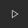

Get started by clicking the play icon  in the top right of the editor to see this prototype example in action.
Take a look at how these prototypes are made and what settings and features are available to you by clicking on the Prototype tab in the top-right next to the Design and Code tabs.
You can add a Device Frame to your prototype by selecting the device you’ve designed for in the Prototype tab when no layers are selected.
You can add a Device Frame to your prototype by selecting the device you’ve designed for in the Prototype tab when no layers are selected.
Actions tell where and how you want the prototype connection to work. Transitions allows you to simulate how your designs will look and respond.
Take a look at the first connection in the ‘Discover’ frame. That connection links to the ‘Photo open’ frame with the Open Overlay action. The transition is set to Move In from the bottom.
You can add a Device Frame to your prototype by selecting the device you’ve designed for in the Prototype tab when no layers are selected.
You can add a Device Frame to your prototype by selecting the device you’ve designed for in the Prototype tab when no layers are selected.